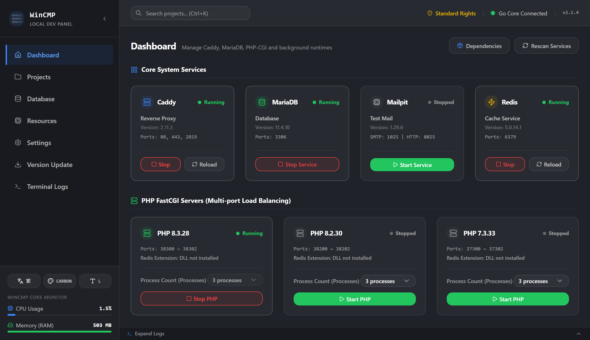

Lightweight & Portable
Local Dev Control Panel for Windows
Integrated with Caddy + MariaDB + PHP + Mailpit + Redis and an interactive project terminal. Core services run without admin privileges — lightweight, portable, and practical.

Why Choose WinCMP?
A portable control panel for local Web development on Windows. Core binaries stay out of system PATH; dependencies can be fetched from the built-in downloader.
Lightweight
Statically compiled in Go + Wails, rendering via native Windows WebView2 instead of Electron. Fast startup; idle memory is about 150-250MB (includes WebView2).
Admin-Privilege-Free Core
Caddy, PHP-CGI, MariaDB, Mailpit, and Redis run under restricted user permissions. No registry writes or global PATH pollution. Note: Hosts sync and some dependency downloads may require UAC.
Interactive Terminal Drawer
Built-in Windows ConPTY and xterm.js at the project root. Slide out a terminal drawer for PowerShell/CMD/Git Bash/WSL with interactive commands and TAB completion.
PHP Multi-Process Balancing
Uses Caddy upstream load balancing to run multiple independent FastCGI processes per PHP version (default 3, adjustable) for more reliable local development.
Runtime Multi-Environment
Supports Node.js, Bun, Python, Go and more. Auto-detects presets such as Laravel, Next.js, Nuxt, Astro, Vite, Django/FastAPI/Flask, PocketBase, and Go API; start in background or a separate terminal.
Hosts Sync & Backup (Needs Admin)
Sync custom local domains to the Windows hosts file. Because Windows protects this file, write and backup require UAC elevation.
Portable Single-EXE
Runs via a single executable without installation. Migrate by taking conf/wincmp.json and the /bin directory to any new location.
One-Click Dependency Downloader
Built-in downloader for Caddy, PHP, MariaDB, Mailpit, Redis, Node.js, Bun, Composer, HeidiSQL and more — place binaries under /bin and WinCMP scans them automatically.
Database Explorer
Browse databases and tables from the panel, then open the same connection in HeidiSQL with one click when you need a full GUI client.
Intuitive & Modern User Interface
Every screen is carefully polished, with smooth micro-interactions and real-time service status monitoring.
WinCMP Architecture & Configuration
Technical stack, managed services, and default configuration of the current WinCMP release (not a historical version comparison):
| Item | Current WinCMP |
|---|---|
| App Architecture | Go 1.26 + Wails v2 + React 18 (rendered via Windows WebView2, not Electron) |
| Platform | Windows; portable single-executable launch, no installer required |
| Core Services | Caddy (reverse proxy / HTTPS), MariaDB, PHP-CGI, Mailpit, Redis |
| Privilege Model | Core services run in user space; Hosts sync and some dependency downloads may prompt for UAC |
| PHP Runtime | Multi-version parallel execution; default 3 FastCGI processes per version (configurable); port rule 3<major><minor><index> |
| App Runtimes | Node.js / Bun / Python / Go / Custom; Background or Terminal launch modes |
| Built-in Terminal | ConPTY + xterm.js drawer; PowerShell / CMD / Git Bash / WSL with TAB completion |
| Config Apply | Project settings written under conf/ and applied via Caddy hot-reload |
| Idle Footprint | Control panel UI itself is about 150-250MB idle (includes WebView2; varies by environment) |
| Dependency Manager | Built-in downloader: Caddy, PHP, MariaDB, Mailpit, Redis, Node.js, Bun, Composer, HeidiSQL |
| Database Tools | Built-in DB Explorer; one-click open in HeidiSQL |
| Portability | Migrate with conf/wincmp.json + /bin directory only |
| Framework Presets | Auto-detect Laravel, Next.js, Nuxt, Astro, Vite, Django/FastAPI/Flask, PocketBase, Go API and more |
* Note: Idle RAM refers to the control panel UI itself. Actual usage varies with the OS environment and which services are running.
How WinCMP Works
Design principles behind isolation and service management:
01 Dynamic Env Isolation
Instead of modifying Windows system global variables, WinCMP injects a temporary PATH only for the child process it starts. Different projects can therefore run different PHP/Node versions at the same time without polluting the system.
02 Smart Ports & Seamless Reload
Ports are allocated by a deterministic rule (for example PHP 8.2 uses 38200-382xx) so versions do not collide. When site settings change, WinCMP rewrites conf/sites and reloads Caddy in the background.
Latest Updates
See what new features and fixes have been added recently!
Fetching latest changelog from GitHub...